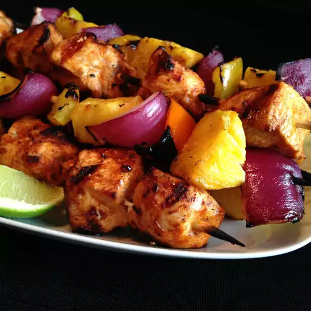

Home
Kebab Recipe

Description
Kebabs consist of cut-up meat, sometimes with vegetables and various other accompaniments according to the specific recipe.
Although kebabs are typically cooked on a skewer over a fire, some kebab dishes are oven-baked in a pan, or prepared as a stew such as tas kebab.
Ingredients
- 3 table spoon olive oil
- 1 lime, juiced
- 1 table spoon chilli powder
- 1 ½ teaspoon paprika
- ½ teaspoon onion powder
- ½ teaspoon garlic powder
- cayenne pepper to taste
- salt and freshly ground black pepper to taste
- 1 Pound skinless, boneless chicken breast halves, cut into 1 ½ inch pieces
- skewers
Steps
- In a small bowl, whisk together the olive oil, vinegar, and lime juice.
- Season with chili powder, paprika, onion powder, garlic powder, cayenne pepper, salt, and black pepper.
- Place the chicken in a shallow baking dish with the sauce, and stir to coat.
- Cover, and marinate in the refrigerator at least 1 hour.
- Preheat the grill for medium-high heat. Thread chicken onto skewers, and discard marinade.
- Lightly oil the grill grate. Grill skewers for 10 to 15 minutes, or until the chicken juices run clear.